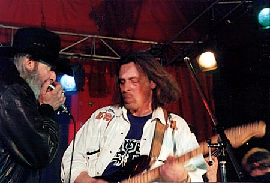
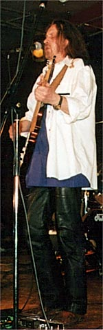
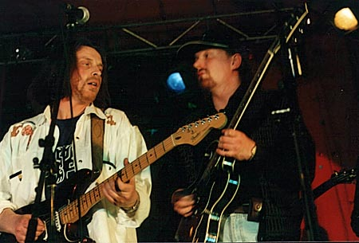
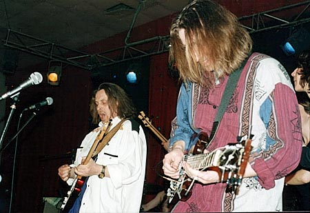
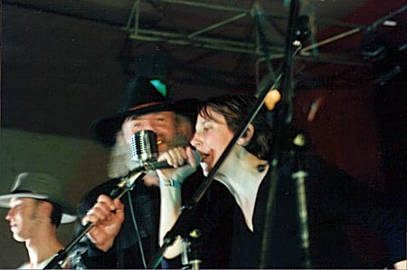
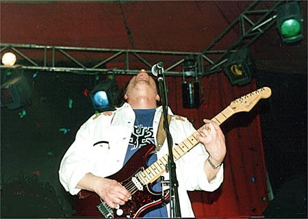

J.A.M.-ЮБИЛЕЙВ Арзамасе 31 марта 2000 года отличным концертом отмечено 5-летие группы "J.A.M.", одной из самых своеобразных на отечественной блюзовой сцене.  Атмсфера и звук в зале были великолепны,а музыка на сцене - горяча! Поздравить с юбилеем "J.A.M." собрались блюзмэны из окрестных городов, Москву включая. из праздничного пресс-релиза: |
 |

Михаил Соколов ("Петрович") - губная гармоника, вокал, Николай Садиков - гитара, Петр Маевский - бас, Александр Гречаников -ударные. Пожалуй, самая колоритная группа на Российской блюзовой сцене. Основатель группы - дедушка Российского блюза - Михаил Петрович Соколов начинал еще в 60-х с "Удачным Приобретением". Сейчас Петрович - выдающийся мастер - исполнитель на губной гармонике, признанный и у нас, и за рубежом (4-е место на всемирном фестивале в Троссингене (Германия), посвященном 100-летию губной гармоники). Гитарист Николай Садиков - едва ли не единственный в России исполнитель на экзотическом, редком у нас инструменте - гитаре National Dobro, с которой он управляется на зависть легко и непринужденно. Стиль Blues Hammer'a - Дельта- блюз - деревенский блюз американского Юга.

Алексей Барышев - гитара, Егор Майоров - вокал, Константин Жданов - ударные, Олег Смирнов - бас. Последний проект гитариста Алексея Барышева, о котором критика говорит не иначе как о гитарном герое. Яркий самобытный талант Алексея определил успех группы на IV Международном фестивале гитарного джаза (С-Петербург, апрель 1999), после которого Blackmailers получили ангажемент на клубной сцене Питера. Группа обладает упругим, плотным, ритмически крепко сбитым звучанием, тяготеющим к техасскому блюзу. В сочетании с несколько отстраненным вокалом Егора Майорова это завораживает. Кроме того, программа Blackmailers Blues Band дает нам редкую возможность послушать как поют блюз на его Родине в исполнении гостьи группы, американской блюзовой певицы Лиз Владек.

Родилась в Нью-Йорке. С детства интересуется афро-американской музыкальной культурой. Учась в Гарварде выступала с блюз-бэндом университета, а затем в многочисленных клубах Манхеттена.
Наши земляки: Александр Шишкин - ф-но, Владимир Макаров - сакс., Александр Кирдянов - бас, Лев Тишин - ударные. Великолепное сообщество профессионалов, музыкантов-виртуозов. Существуя не один десяток лет, этот ансамбль, можно сказать стал визитной карточкой джазового Н.Новгорода. Лауреаты многочисленных джазовых фестивалей самого разного уровня. Сотрудничают с известным и джазовыми солистами из разных стран. Каждый из музыкантов, обладая высоким исполнительским мастерством, в зависимости от ситуации, может взять на себя роль и лидера, и чуткого аккомпаниатора. На этот раз вместе с Jazz Friends выступит джазовая певица из Н.Новгорода Яна Тюлькова.
Яна - студентка Нижегородской консерватории. В 95-м стала лауреатом всероссийского конкурса по классическому ф-но). Несмотря на молодость, далеко не новичок на джазовой сцене. Успешные выступления на фестивалях (лучший вокал на фестивале "Знай Наших"-98; участие в "Jazz No Jazz"- 99 в Цюрихе; "Джаз России"-98,99) показывают её как певицу обладающую индивидуальной манерой, собственным голосом. Будем надеяться, что дебютное совместное выступление Jazz Friends и Яны Тюльковой будет плодотворным и в дальнейшем.

Бывшие новости |
Январь-Февраль 1999 |
Март 1999 |
Ноябрь-Декабрь 1999
Январь 2000 |
Февраль 2000 |
Март 2000 |
Апрель 2000